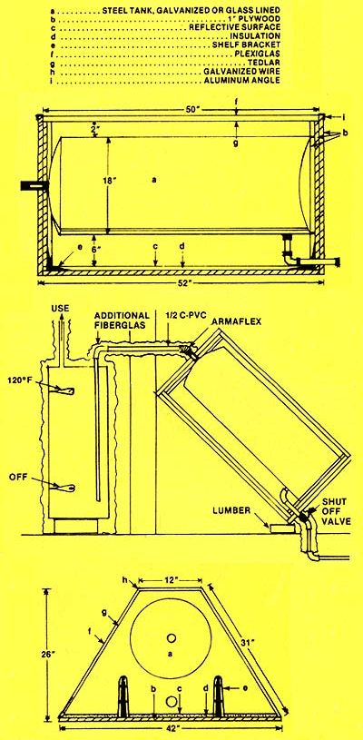

Don't try to tell Dinh Khanh that solar water heaters have to be complicated or expensive. Khanh-a resident of Gainesville, Florida designed and built the compact (26" X 42" X 52"), low-cost ($180), sun-powered water-warmer shown at left . . . and it's about as un complicated a device as you could hope to find.
Basically, Khanh's heater is nothing more than a flat-black-painted 66-gallon water tank enclosed in an insulated pyramidal framework consisting of 1" plywood, Plexiglas outer glazing, and a Tedlar inner glazing. (Behind the tank is a 42" X 52" reflector surface made from recycled aluminum printing plates.)
What Khanh has done is (1) lean this odd-shaped solar collector against the south side of his house at a 45° angle (to take maximum advantage of the low winter sun), (2) run cold water into the bottom of the 66-gallon tank, and (3) route CPVC pipe from the top of the solar unit to a conventional water heater inside the Khanh dwelling. This way, incoming water is pre-warmed by the solar collector to a temperature of about 100° F before entering the house's conventional electric heater . . . and the Khanh family enjoys a 50% savings on their monthly hot water bills.
Dinh sees no reason why others can't build their own semi-triangular solar water heaters (and enjoy similar savings), as long as certain rules are followed during construction. For instance: "It's important," says Khanh, "that all angles and proportions be kept the same as in the original design, and that the tank is mounted at least four inches away from the underlying reflector. Also-to maintain the best balance between high energy absorbance during the day and low heat loss at night-the builder should only use a 16- to 18-inch-diameter water tank of 42 to 66 gallons' capacity." (The Vietnamese born inventor emphasizes, too, that the tank should be leak-free, able to withstand 75-psi pressure, and either galvanized or glass-lined.)
At 400-plus pounds all-up weight, the Khanh heater isn't exactly feather-light. ("Be sure to take this into account," the inventor warns, "if you plan to install the device on your roof!") The dandy little solar hot box, however, is one heck of an inexpensive, compact, easy-to-build "answer" to high water heating bills. In fact, if there's a better way to turn 66 gallons of cold water into 66 gallons of hot water . . . we haven't seen it!
|
 |
|
|